Mizil | Casa Condeescu | Mihai Bravu, nr. 85
Muzeul Orașului Necunoscut explorează memoria unui oraș mai degrabă inexistent în conștiința societății, devenit stereotip, cu o istorie pe care nici măcar propria comunitate nu o mai cunoaște.
Casa Condeescu
casă de negustor de la sfârșitul secolului XIX, primărie din 1929
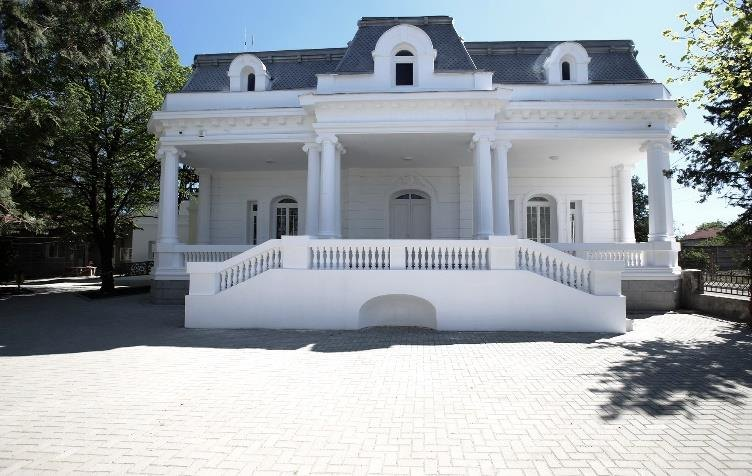
Șapte săli, șapte cuvinte-cheie. Fiecare deschide o ușă spre o parte mai puțin cunoscută a orașului.
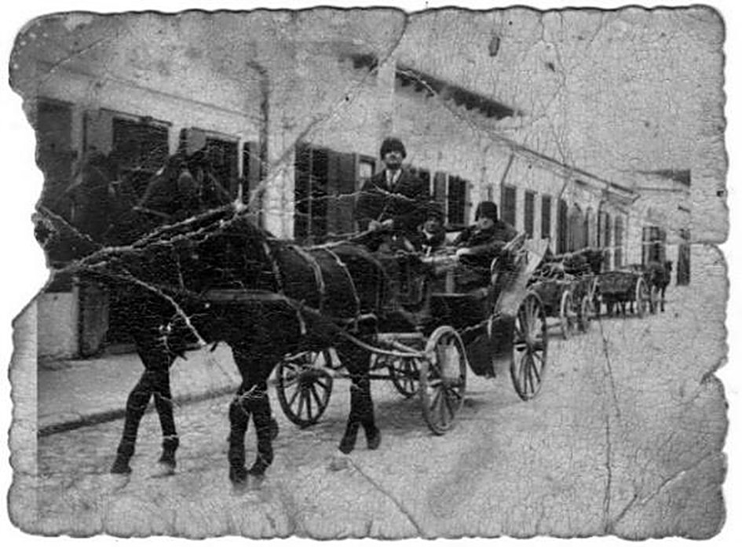
Holul central. Legenda luminișului de la marginea Codrilor Vlăsiei, birjarii din strada Poterașilor și un oraș care a ars de zeci de ori.
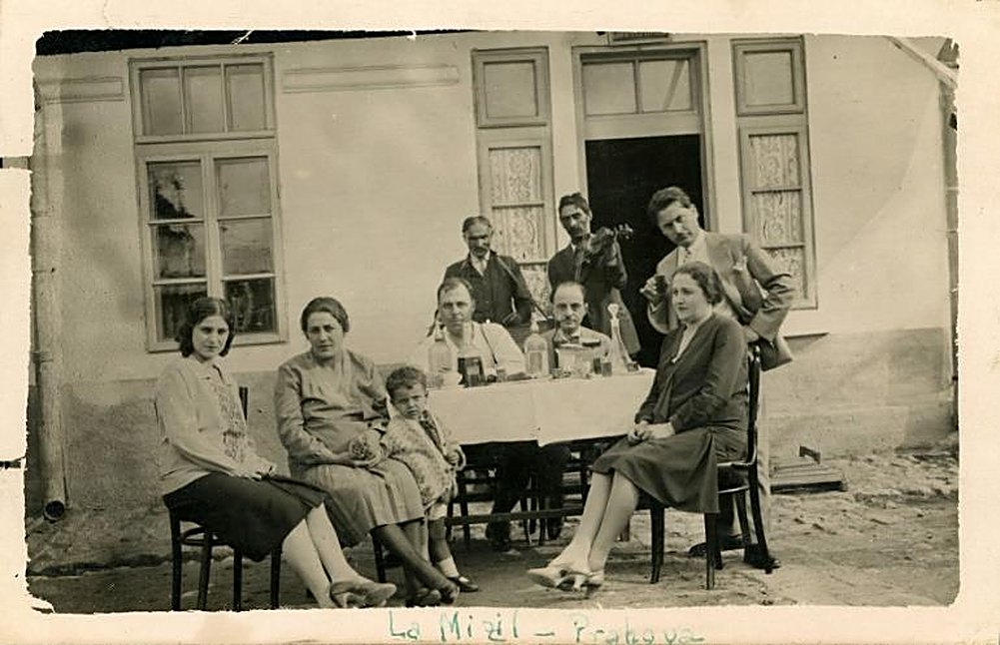
Stereotipuri, hărți și măsurători: cum a devenit Mizilul etalonul marginii.
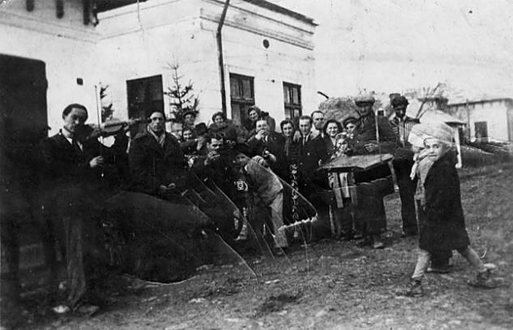
Zile negre.
Contrastele orașului: colaci și pomeni, lăutari, incendii și ruine.
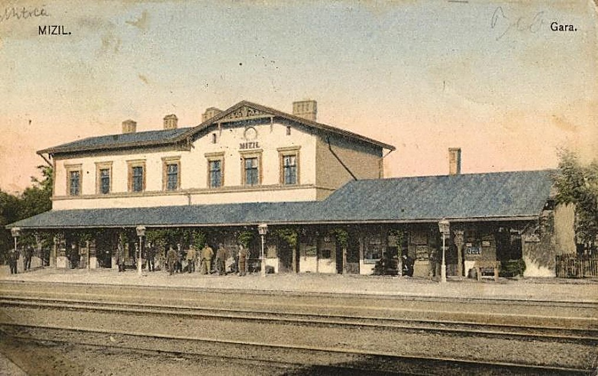
Gara, trenurile și călătoriile care au legat Mizilul de lume și de literatură.
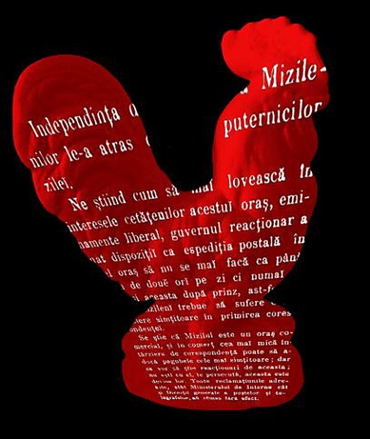
Viața publică, primarii și politica de provincie, spuse prin basmul cu cocoșul roșu.
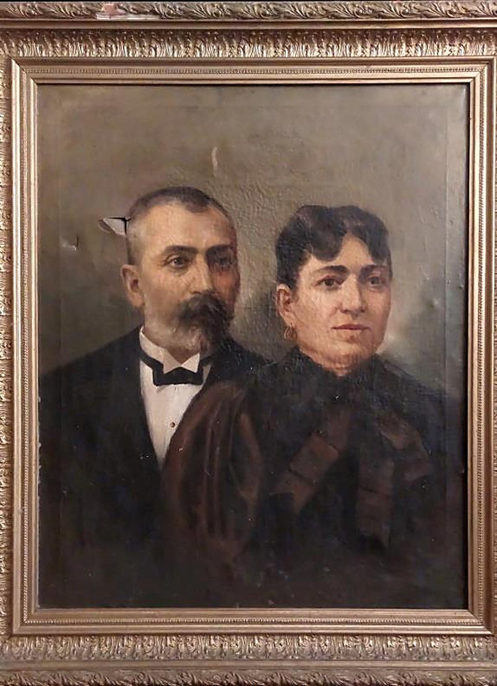
Viața privată, căsnicii și amoruri, așa cum le-au scris teatrul și presa satirică.
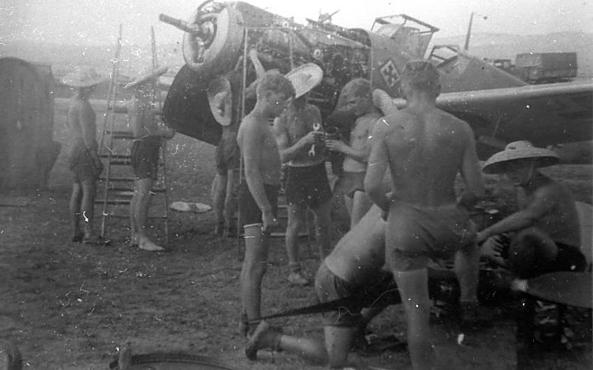
Regimentul, aerodromul, războaiele, dar și teatrul și fotbalul.
[ Arhiva ]
Scrisori, fotografii de familie, acte, reclame din presa locală, obiecte rămase prin poduri. Fiecare fragment umple un gol din memoria orașului.
În Mizil găsești povești.
Ai fotografii, scrisori sau amintiri din Mizil? Trimite-ne povestea ta. O documentăm, o păstrăm și o punem în dialog cu restul arhivei.
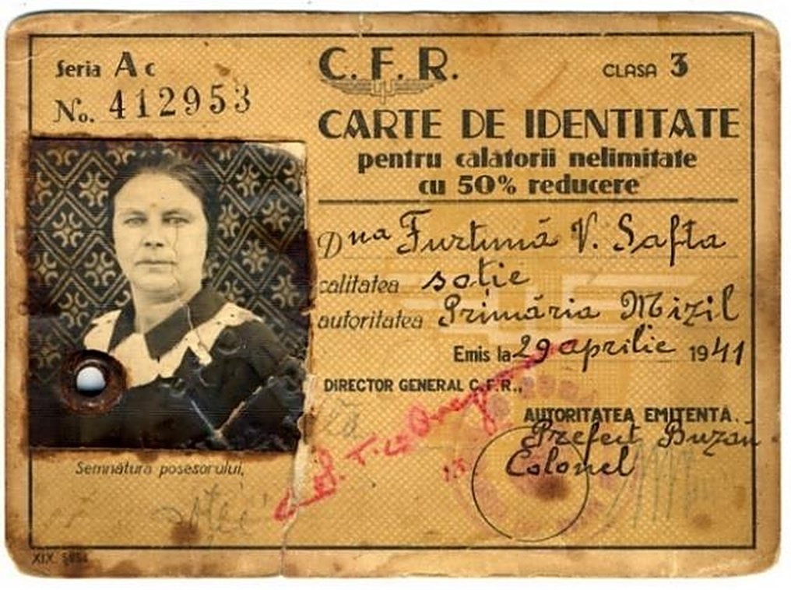
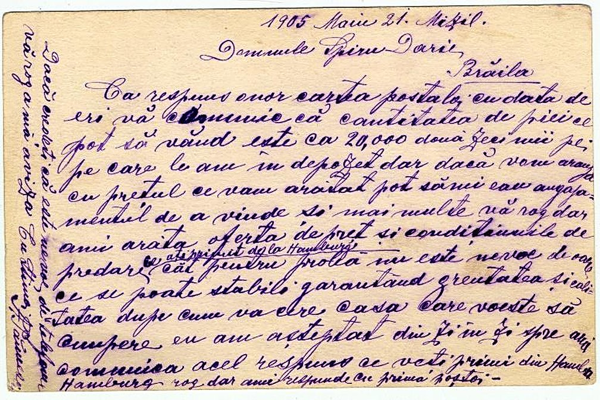
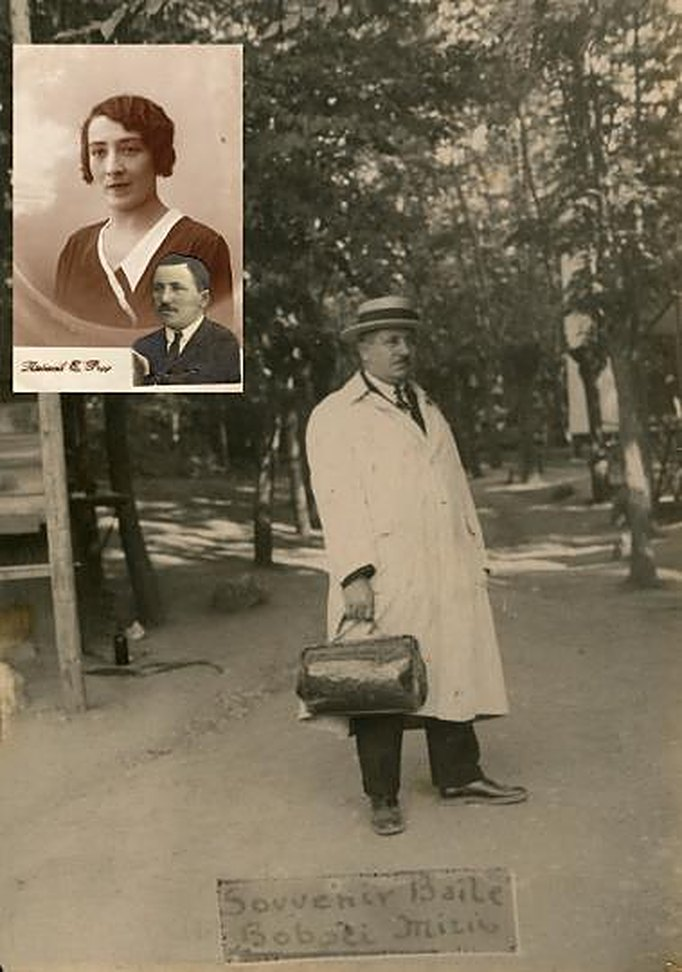
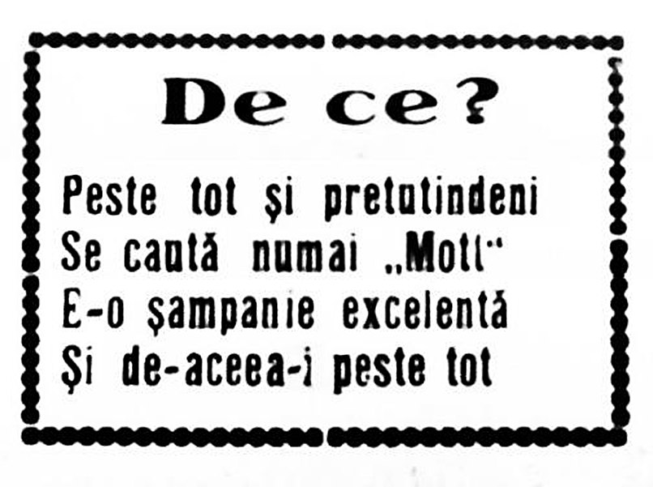
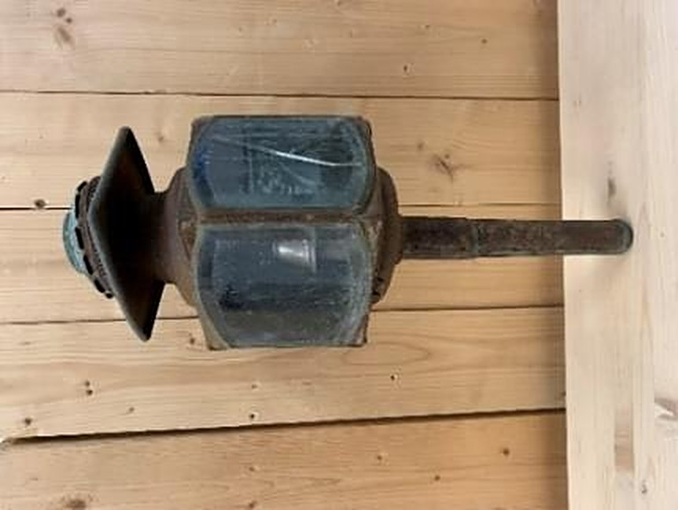